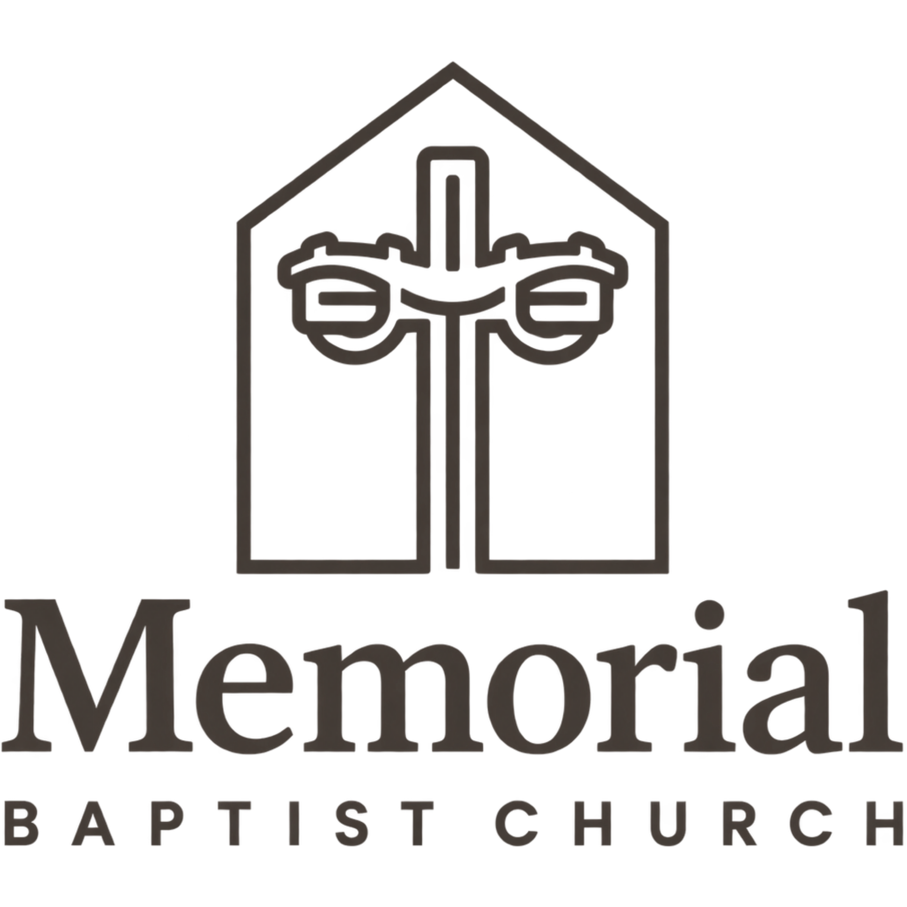

Brand & Style Guide · Version 1.0 · August 2026
A steeple, a cross, and two lamps on Yale Avenue.
This guide covers the four things that keep Memorial looking like Memorial: the color system, the type scale, printed collateral, and social templates. Everything here is derived from the existing mark — nothing was invented for novelty's sake.
{{ c.num }}
{{ c.title }}
{{ c.note }}
01 — Color
One brown, one warm ground, and two accents that stay in their lane.
Steeple Brown is the ownable color — it comes straight out of the logo and does most of the work. Lamplight is the only color allowed on a button or a link. Yale Sage labels and categorizes; it never becomes a background for large areas. Brass is for small marks on dark grounds only.
Proportion
Roughly 62 / 24 / 9 / 5 — cream, brown, lamplight, sage. If a layout feels loud, the accents have crept past 15% together.
Contrast (WCAG AA)
{{ x.pair }}{{ x.ratio }}
Never do this
·{{ d }}
02 — Typography
Lora for what we say. Lato for how we say it.
The pairing contrasts on classification and harmonizes on warmth and x-height. Lora is a transitional serif with the bracketed serifs and ball terminals already in the wordmark — it is the closest available match to the logotype. Lato is a humanist sans, the most comfortable family for long reading, forms, and small print, which matters in a congregation with a lot of readers over sixty. Both are open-licensed and free for print and web.
Lora
Headlines · Scripture
Aa Bb Gg
ABCDEFGHIJKLMNOPQRSTUVWXYZ
abcdefghijklmnopqrstuvwxyz 0123456789
“Take my yoke upon you and learn from me, for I am gentle and humble in heart.”
Weights in use: 400, 600, 700 · italic 400
Lato
Body · UI · Labels
Aa Bb Gg
ABCDEFGHIJKLMNOPQRSTUVWXYZ
abcdefghijklmnopqrstuvwxyz 0123456789
Dinner is at seven in the fellowship hall. Bring a friend; no sign-up needed. Rides are available on request — call the office by Tuesday.
Weights in use: 300, 400, 700 · italic 400
The scale
16px base, major-third ratio (1.25) for interface steps, wider jumps for display. Every step is fixed with its own leading and tracking — do not eyeball intermediate sizes.
{{ t.head }}
·{{ i }}
03 — Print collateral
The bulletin is the brand most people actually hold.
Printed on uncoated warm white stock, 70# text for the bulletin. The cream ground does not print — it is the paper. All print type is 12pt minimum, and 14pt for anything a senior adult reads in dim light.
Sunday bulletin — cover · 5.5 × 8.5 in

The Lord's Day · September 6, 2026
The Son of Man
Came to Serve
“For even the Son of Man came not to be served but to serve, and to give his life as a ransom for many.”
Mark 10:45 · 2800 S. Yale Ave.
Bulletin — order of service
Order of Worship
{{ o.item }}
{{ o.who }}
Wednesday: study 6:00, dinner 7:00. Member meeting Sept 28.
Lobby / wayfinding sign
This way
Preschool & Kids
Check-in
Hall B · Rooms 101–118
Name tag · 3.5 × 2.25 in
Ask me anything
Yonas
Church Host
04 — Social templates
Three templates, and no fourth one.
A verse square, an event card, and a story. Whoever runs the account fills in text and swaps the photo — the layout never changes, which is what makes a feed look like one church instead of six volunteers.
Verse square · 1080 × 1080
“Come to me, all you who are weary and burdened, and I will give you rest.”
Matthew 11:28
memorialbaptist.com
Event card · 1080 × 1350
Story · 1080 × 1920
Memorial Baptist · Tulsa
This Sunday
10:30 AM
Baptism Sunday and the Lord's Supper. Guest parking on 28th.
Photography direction
·{{ p }}
Voice, in one paragraph
Plain, warm, specific, and short. Say the actual time and the actual room. Answer the question a nervous first-time visitor is really asking. Never use hype, never use exclamation points in headlines, and never promise an experience — promise a Bible, a seat, and a person who will talk to you.